施設案内
施設案内
外来棟
ロビー
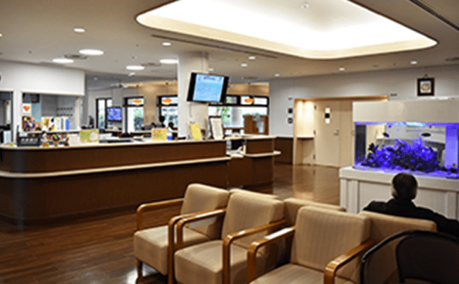
中庭が見渡せる広々とした空間でゆったりと落ち着いてお待ちいただけます。季節の花を飾り、水槽を設置し、心安らぐ空間作りに努めております。
個人待合室
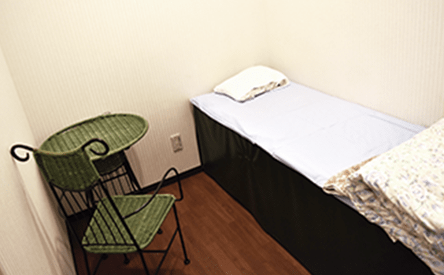
ロビーでお待ちいただくことが苦手であったり、落ち着かない方は、個人待合室（個室）でお待ち頂けます。
診察室
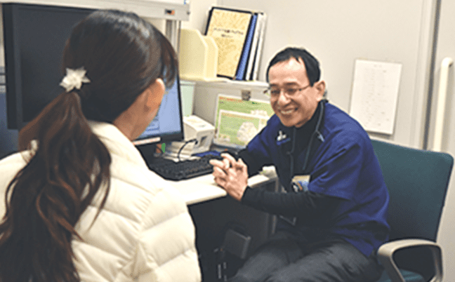
広めの個室で、周りを気にせずリラックスして医師との診察を受けていただけます。
救急外来診察室
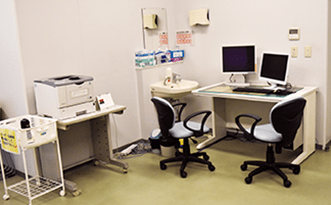
時間外および緊急的な対応をするための診察室です。また、駐車場からすぐに診察室に入ることができ、入院となった場合も、そのまま病室へとアクセスできることが特徴のひとつです。
CTスキャン室
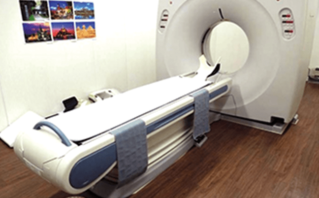
４列のマルチスライスCTを採用しており、全身検査が可能です。また、X線機器と透視機器があり、X線機器では、胸部、腹部、骨などのレントゲン撮影の他、骨密度測定ができます。透視機器では、主に胃透視検査を行っています。
各種検査機器
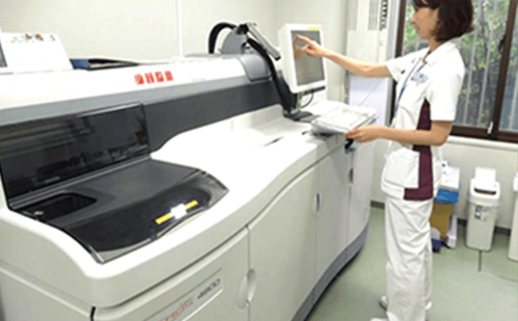
超音波、心電図、脳波の他、生化学自動分析装置（血液検査・尿検査）の設備を有し、緊急な場合にも迅速な対応が出来ます。
入院棟
差額ベッド（有料個室）
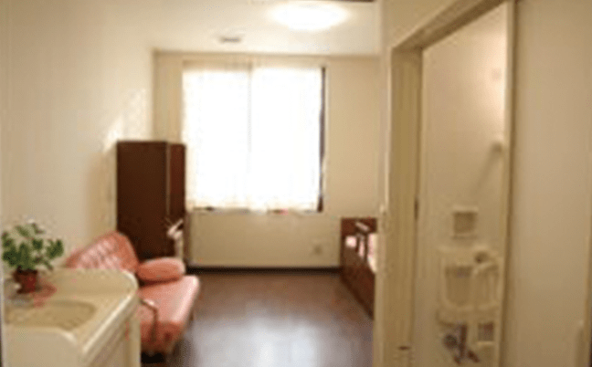
個室と同等、もしくはそれ以上の付帯設備(テレビ、シャワー、電動リクライニングベッド、冷蔵庫等）があります。落ち着いた環境の中にある高品質な設備によって、よりリラックスできます。※差額料金によって付帯設備が異なります
個室
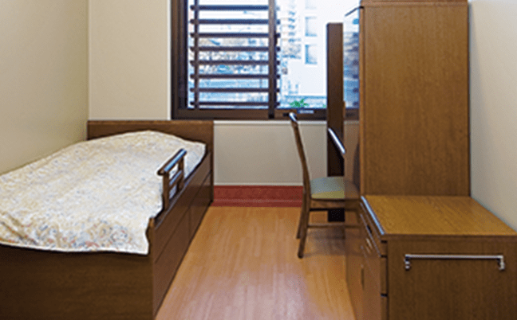
ひとりでの空間での療養が必要な場合にご利用いただくことができます。病室の中に個別の洗面所やトイレなどがございます。※病棟によって付帯設備が異なります。
大部屋
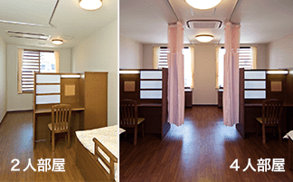
2人部屋4人部屋がございます。落ち着いた色調の設備でゆっくりと療養できる環境になっております。隣のベッドとはカーテンで仕切られており、プライバシーが保たれています。
デイルーム
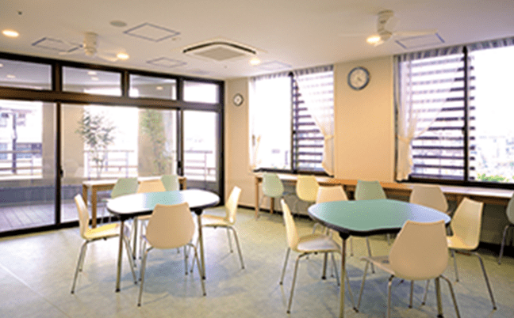
大きな窓から優しい陽の光が差し込みます。温度、湿度も適正に保たれ、快適な空間になっています。住み慣れた家にいるようなくつろぎの空間になるよう努めています。
受付・談話コーナー

オープンな受付カウンターは職員の笑顔がよく見えます。ゆっくりお話ができる談話コーナーは、優しい光が差し込む心落ち着く場所です。病室やデイルームから独立した空間になっております。
多目的ホール
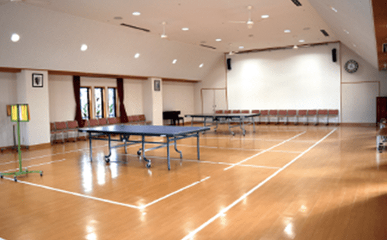
屋上庭園が見え、室内で競技もできるほどの大きなホールです。患者様の作業療法の他、地域の方をお招きしてさまざまなイベントが催されています。また、他医療機関や学校関連の研究発表にホールを利用することもあります｡
在宅支援施設
精神科デイケア デイナイトケア・ショートケア
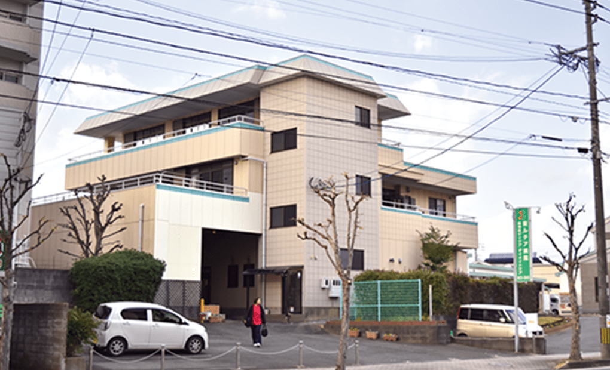
多種多様なプログラムを通して、社会生活を送る上で必要な知識や技術を身に付け、自身を回復し、より健康的な生活が送れることを目指します。
重度認知症患者デイケア すずらん
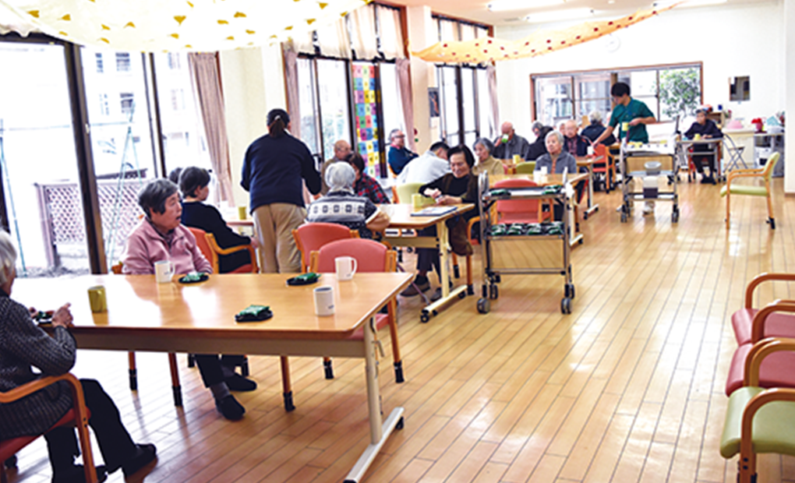
認知症の進行を予防し、認知症の行動・心理症状（不穏、興奮、介護拒否など）の緩和と精神的な安定を図る通所施設です。利用者様に合った「治療・リハビリ・介護」を提供します。
訪問看護ステーションクローバー クローバーおおき
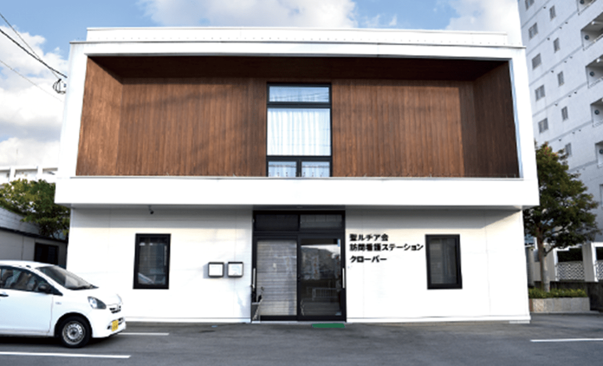
ご自宅等で安心して生活が送れるよう、医療スタッフがご自宅に伺い「看護」や｢リハビリ｣を提供します。
グループホームルピナスⅠⅡⅢ（共同生活援助）
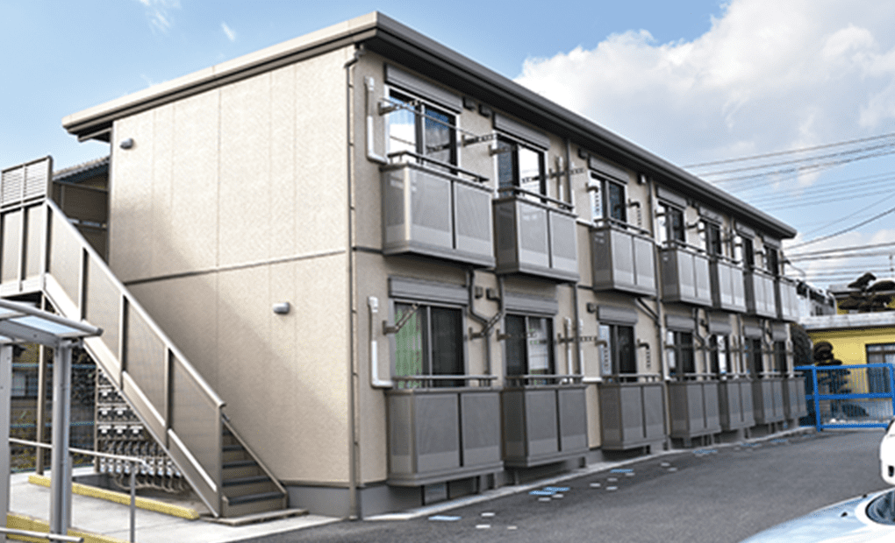
共同生活を通じて、地域社会の中で自立した生活を実現していくことを目的とした住居施設です。
中庭
パティオ
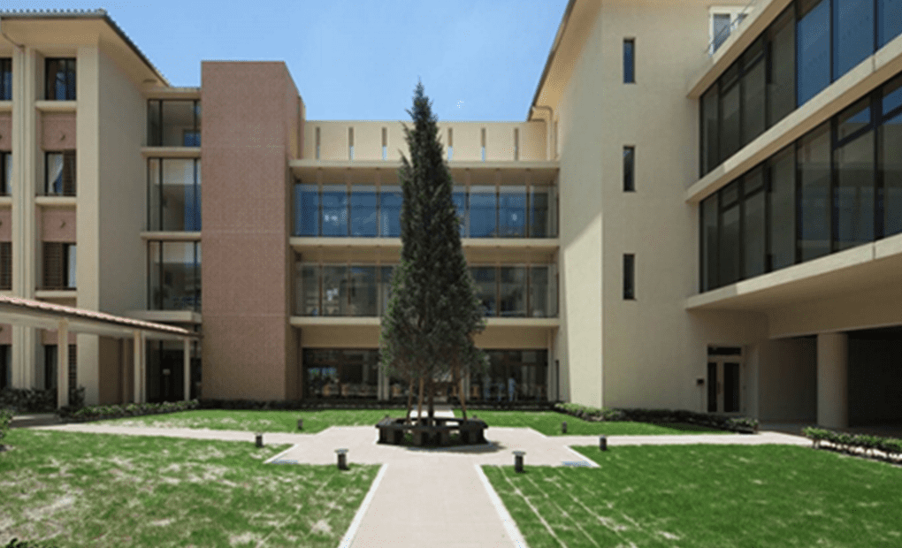
中央のシンボルツリーの周りを囲むようにベンチが備えられ、気候の良い時期は入院患者様やご家族の憩いの場となっています。また、ウォーキングや散歩に利用していただけます。

〒830-0047 福岡県久留米市津福本町1012
 0942-33-1581 (代表)
0942-33-1581 (代表)
FAX 0942-33-1586
| 月 | 火 | 水 | 木 | 金 | 土 | 日・祝 | |
|---|---|---|---|---|---|---|---|
| 9:00〜12:30 | ○ | ○ | ○ | ○ | ○ | ○ | × |
| 14:00〜17:00 | ○ | ○ | ○ | × | ○ | × | × |
| 9:00〜12:30 | 14:00〜17:00 | |
|---|---|---|
| 月 | ○ | ○ |
| 火 | ○ | ○ |
| 水 | ○ | ○ |
| 木 | ○ | × |
| 金 | ○ | ○ |
| 土 | ○ | × |
| 日・祝 | × | × |